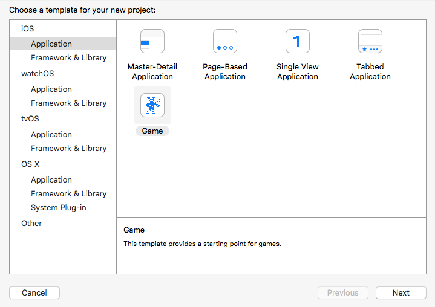
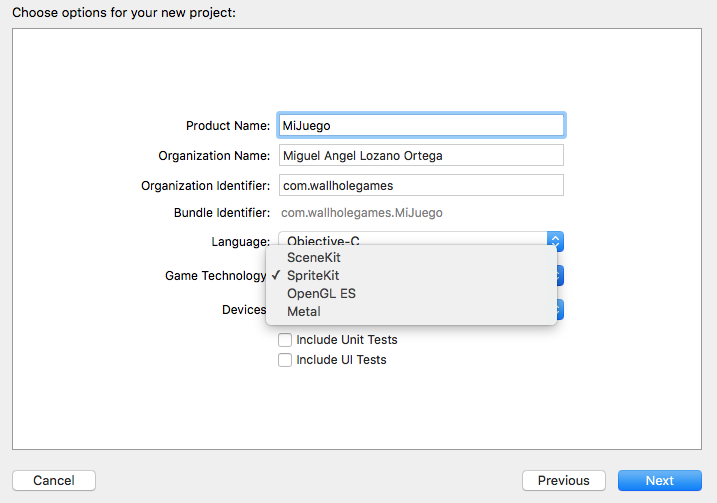
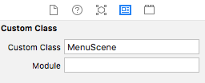

SpriteKit¶
Creación de un proyecto de SpriteKit¶
Desde Xcode podemos crear un proyecto de tipo Game, y nos preguntará cuál de las librerías nativas queremos utilizar como base.
 
En este caso vamos a empezar trabajando con SpriteKit, el framework nativo de la plataforma iOS destinado al desarrollo de aplicaciones que muestren cualquier tipo de gráficos 2D animados, como es el caso de los videojuegos 2D.
Xcode nos ofrecerá además herramientas visuales en el entorno para crear las escenas del videojuego.
Conviene destacar también que esta tecnología presenta abundantes similitudes con el motor Cocos2d-x, por lo que la transición entre estas tecnologías será muy sencilla.
Todas las clases de SpriteKit tienen el prefijo SK, y se encuentra disponible a partir de iOS 7.
La escena de SpriteKit¶
Como en prácticamente todos los motores para videojuegos, SpriteKit utiliza una organización jerárquica de los elementos escena, es decir, todos los elementos de la escena son nodos que se organizan en forma de de árbol.
Tendremos una escena para cada estado (pantalla) del juego (menú principal, opciones, partida, etc).
Creación de la escena¶
Para crear una escena normalmente crearemos una clase que herede de SKScene, por ejemplo:
1 2 3 4 5 | import SpriteKit class MenuScene: SKScene { // ... } |
Aunque podemos crear una escena de forma totalmente programada, Xcode nos ofrece la posibilidad de definir la escena (o parte de ella) de forma visual. Para ello deberemos crear un recurso de tipo SpriteKit Scene desde Xcode, con File > New > File ... > iOS > Resource > SpriteKit Scene:

En la plantilla que crea el entorno al seleccionar un proyecto de tipo SpriteKit veremos que tenemos ya creada una escena con nombre
GameScene.sks.
La escena se quedará guardada en un fichero con extensión .sks (Sprite Kit Scene). Podemos cargar este recurso desde el código simplemente proporcionando el nombre de la escena al siguiente constructor de SKScene:
1 | let scene = SKScene(fileNamed: "MenuScene") |
En el caso del código anterior, cargará el contenido del fichero MenuScene.sks.
El escenario más común será aquel en el que definamos una escena mediante el editor visual, pero asociando dicha escena a una subclase de SKScene propia donde personalicemos el comportamiento de dicha escena.
Podemos asociar una clase propia a dicha escena creada de forma visual utilizando el Inspector de Custom Class del editor de la escena (dentro del panel derecho del entorno):

Ahora, si cargamos dicha escena desde el código, la clase que se utilizará para instanciarla será la clase MenuScene que hemos definido anteriormente, en lugar de la clase genérica SKScene.
Presentar la escena¶
Para poder mostrar esa escena necesitaremos previamente contar con una vista de tipo SKView, que hará de contenedor de escenas. Con esta clase podremos presentar una escena, o bien cambiar la escena que se está mostrando, realizando así una transición entre escenas.
Por ejemplo, podemos introducir una vista de este tipo dentro de nuestro controlador en el storyboard. En el código de inicialización de nuestro controlador podemos obtener dicha vista y cargar en ella la escena principal:
1 2 3 4 5 6 7 8 9 10 11 | override func viewDidLoad() { super.viewDidLoad() if let view = self.view as! SKView? { // Carga la escena del fichero 'MenuScene.sks' if let scene = SKScene(fileNamed: "MenuScene") { // Presenta la escena en la vista view.presentScene(scene) } } } |
Hemos de recordar que el constructor de la escena toma como parámetro el nombre del fichero .sks de la escena a cargar, omitiendo la extensión.
Ciclo de vida de la escena¶
Dentro de la clase de la escena, podemos sobrescribir cualquiera de los siguientes métodos para responder a eventos de su ciclo de vida:
sceneDidLoad(): Se invoca cuando la escena va a ser presentada, para su inicialización. Este evento tendrá lugar antes de que la escena haya sido añadida a la vista.didMove(to:): Se invoca en el momento en el que la escena se añade a la vista. Este es un buen momento para inicializar los elementos de la interfaz de la escena.didChangeSize(): Se invoca si se produce un cambio en el tamaño de la escena. Por ejemplo, si queremos soportar el cambio de orientación del dispositivo, deberemos implementar este método para indicar cómo adaptar de forma correcta la disposición de los elementos en pantalla.willMove(from:): Nos indica cuando la escena va a ser eliminada de la vista, posiblemente por cerrar la vista o por hacer una transición a otra escena.
Habitualmente aprovecharemos didMove(to:) para crear de forma programada el contenido de la escena (o parte de él). Este contenido se definirá como un árbol de nodos (objetos de tipo SKNode o de alguna de sus subclases).
Árbol de la escena¶
La escena de SpriteKit se define como un árbol de nodos, todos ellos de tipo SKNode o alguna de sus subclases.
Los nodos genéricos se instancian mediante el constructor vacío de SKNode:
1 | let nodo = SKNode() |
Este tipo de nodos no mostrarán nada en la escena, pero son útiles para agrupar otros nodos en el árbol de la escena y poder moverlos de forma conjunta. Más adelante veremos otros tipos de nodos que heredan de SKNode, como los sprites y las etiquetas de texto.
Propiedades de los nodos¶
Todos los nodos (clases que heredan de SKNode) comparten una serie de propiedades comunes heredadas de dicha clase.
Podremos cambiar la posición (x,y) de todos los nodos en la escena, así como su orden z, que determinará qué nodos se muestran por delante de otros:
1 2 | nodo.position = CGPoint(x: 100, y: 100) nodo.zPosition = 5 |
También podremos cambiar su rotación y su escala (x,y):
1 2 3 | nodo.zRotation = 90 nodo.xScale = -1 nodo.yScale = 1 |
Es de especial interés la posibilidad de hacer un escalado de -1, para así crear un efecto "espejo".
Construcción del árbol de la escena¶
Además de estas propiedades, otra característica importante de los nodos es su método addChild:, que nos permite añadir otro nodo como hijo:
1 2 | let grupo = SKNode() grupo.addChild(nodo) |
El agrupamiento jerárquico de nodos es importante porque nos permitirá por ejemplo mover de forma conjunta todo un grupo de nodos cambiando únicamente la posición del nodo padre.
Para eliminar un nodo del árbol, simplemente deberemos indicar que sea eliminado de su nodo padre:
1 | nodo.removeFromParent() |
Encontraremos también métodos y propiedades para conocer quién es el padre de un nodo, o moverlo a otro nodo padre, entre otras funciones.
Tipos de nodos¶
Destacamos los siguiente tipos de nodos:
SKLabelNode: Subclase deSKNodeque mostrará una etiqueta de texto en la escena.SKSpriteNode: Subclase deSKNodeque mostrará un sprite en la escena.SKShapeNode: Muestra formas básicas y contenido de Core Graphics.SKVideoNode: Muestra un reproductor de vídeo.SKCropNode: Recorta el contenido de sus hijos.SKReferenceNode: Hace referencia a contenido compartido en un fichero.sks.
Etiqueta de texto¶
Un tipo de nodo fundamental es la etiqueta de texto (SKLabelNode) que nos permitirá mostrar texto en la escena. Este tipo de nodo se puede crear a partir de la fuente a utilizar:
1 | let etiq = SKLabelNode() |
A parte de las propiedades generales de los nodos, la propiedad más importante de este tipo de nodo es text, que nos permite especificar el texto a mostrar por la etiqueta:
1 | etiq.text = "Super Mobile Game" |
Este tipo de nodos nos permitirá cambiar además el tipo de fuente, su color, o la alineación del texto.
Sprites
El tipo de nodo más importante en un videojuego es el sprite, que representa aquellas entidades que aparecen en la escena (personajes, objetos, etc), y que se muestran como una imagen o una animación. Podemos crear un sprite a partir del nombre de la imagen que queremos que muestre:
1 | let sprite = SKSpriteNode(imageNamed: "mario") |
Dado que el sprite muestra una imagen en la escena, una propiedad importante será size, que nos indicará el tamaño del sprite en puntos. Esto será importante porque se tendrá en cuenta también para el cálculo de colisiones con otros sprites de la escena.
Además, tambien tiene una propiedad anchorPoint, cuyo valor por defecto es (0.5, 0.5), y que siempre tomará valores entre (0.0, 0.0) y (1.0, 1.0). Esta propiedad nos indicará cómo posicionar el sprite en la escena cuando modifiquemos su propiedad position. Se trata de las coordenadas locales dentro de la imagen del sprite que se situarán en la posición indicada por position, siendo:
(0.0, 0.0)es la esquina inferior izquierda del sprite.(0.5, 0.5)es el centro del sprite.(1.0, 1.0)es la esquina superior derecha del sprite.
Acciones¶
Los nodos de la escena nos permiten ejecutar acciones, que modifican las propiedades del nodos (como su posición o rotación) a lo largo del tiempo. Estas acciones se definen como objetos de la clase SKAction.
Dentro de SKAction encontramos númerosos métodos factoría para crear diferentes tipos de acciones. Por ejemplo, tenemos acciones para mover un nodo a una posición o rotarlo a un cierto ángulo:
1 2 3 4 | let accionMoverFinal = SKAction.move(to: CGPoint(x: 200, y: 200), duration: 2.0) let accionRotarFinal = SKAction.rotate(toAngle: 3.14, duration: 1.0) let accionMoverInicio = SKAction.move(to: CGPoint(x: 100, y: 100), duration: 2.0) let accionRotarInicio = SKAction.rotate(toAngle: 0.0, duration: 1.0) |
En estas acciones se indica la posición o ángulo destino a la que se moverá el nodo, y el tiempo que tardará en hacerlo (en segundo).
Existen también otros muchos tipos de acciones para modificar otras propiedades como la escala, la textura, el color o el control de audio.
También encontramos acciones que nos permiten combinar otras acciones, o repetirlas:
1 2 3 4 5 6 | let accionSecuencia = SKAction.sequence( [accionMoverFinal, accionRotarFinal, accionMoverInicio, accionRotarInicio]) let accionRepite = SKAction.repeatForever(accionSecuencia) |
Con esta última acción podemos especificar por ejemplo el movimiento de "patrulla" de un enemigo, que se moverá contínuamente entre los puntos (100, 100) y (200, 200).
Podemos ejecutar cualquiera de las acciones anteriores sobre cualquier nodo, utilizando el método run(:) de la clase SKNode:
1 | nodo.run(accionRepite) |
De esta forma dicho nodo reproducirá la conducta especificada por la acción.
Podremos parar todas las acciones de un nodo con removeAllActions(). También podemos añadir una acción con una clave (key) que posteriormente nos permitirá parar únicamente dicha acción, o podemos ejecutar una acción proporcionando un bloque de código que se ejecutará cuando la acción se complete.